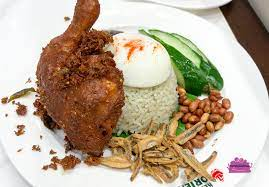

Nasi Lemak

Nasi lemak is a dish originating in Malay cuisine that consists of fragrant rice cooked in coconut milk and pandan leaf. It is commonly found in Malaysia, where it is considered as the national dish.
Ingredients to make perfect nasi lemak
Prep 35 min
Soak 20 min
Cook 1 hr 45 min
Serves 4 (and easily multiplied or divided)
For the sambal
- 20 largish dried red chillies
- 5 fresh red chillies
- 7 small round shallots
- 2 plump garlic cloves
- 30g piece fresh ginger
- 75ml neutral oil, such as vegetable or sunflower
- 2 tsp belacan (fermented shrimp paste)
- Tamarind paste or tamarind water, to taste (see introduction) I used 1 tbsp
- Sugar, to taste – I used 1 tbsp
- Salt, to taste
For the rice
- 375g long-grain rice
- 1 x 400ml tin coconut milk
- 1 tsp salt
- 2 pandan leaves
- 2 tbsp coconut cream (optional, or use the cream on top of the milk)
For the accompaniments
- 50g peanuts
- 50ml oil
- 50g dried anchovies
- 4 eggs
- ½ cucumber
Steps to make delicious Nasi Lemak
- Start with the sambal. Remove and discard the stalks from the dried chillies, then roughly break them up and put in a small pan of boiling water.

- Simmer for 15 minutes, then drain, reserving a little of the cooking water (a teaspoon or so). Meanwhile, trim and deseed the fresh chillies and peel and roughly chop the shallots, garlic and ginger.
- For further information please click here